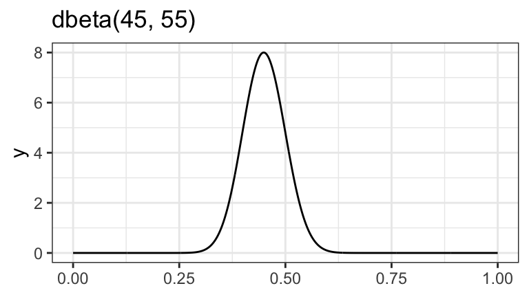
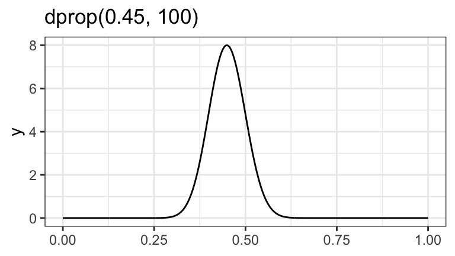
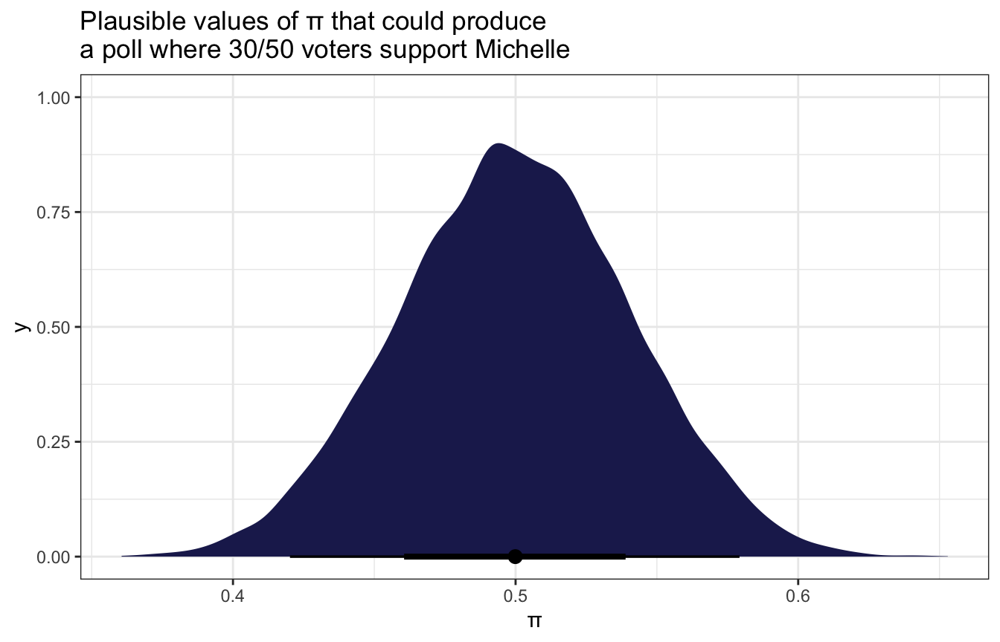
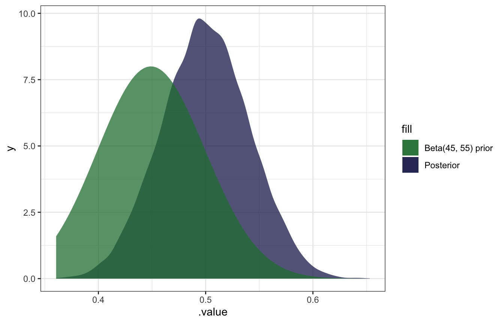
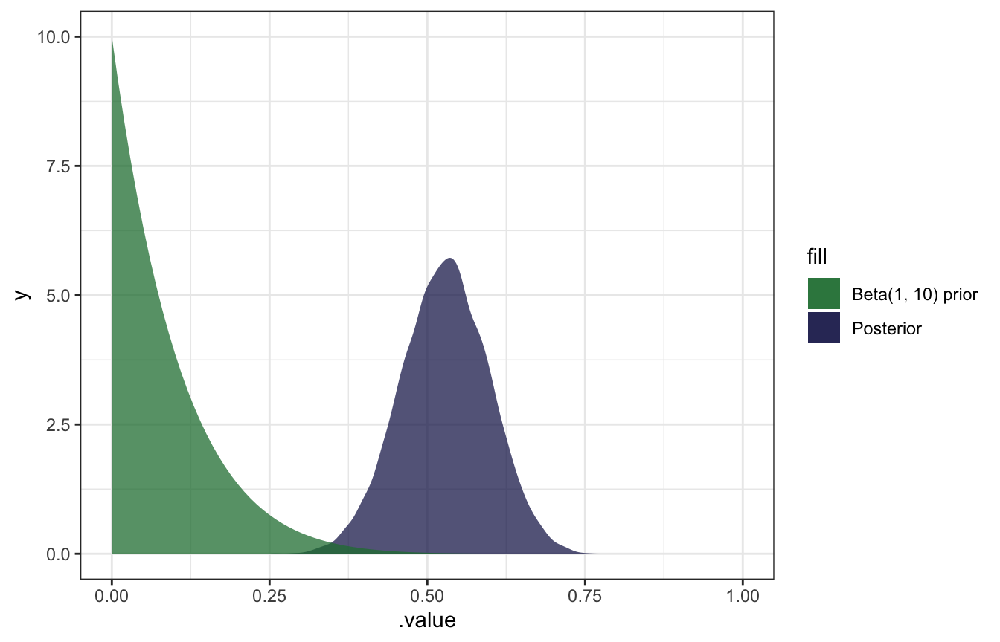

library(bayesrules)
library(tidyverse)
library(extraDistr)
library(brms)
library(tidybayes)
# Plot stuff
clrs <- MetBrewer::met.brewer("Lakota", 6)
theme_set(theme_bw())
# Seed stuff
BAYES_SEED <- 1234
set.seed(1234)Reading notes
The Beta-Binomial Bayesian Model
3.1: Beta prior model
\[ \pi \sim \operatorname{Beta}(45, 55) \]
ggplot() +
geom_function(fun = ~dbeta(., 45, 55), n = 1001) +
labs(title = "dbeta(45, 55)")
ggplot() +
geom_function(fun = ~dprop(., mean = 0.45, size = 100), n = 1001) +
labs(title = "dprop(0.45, 100)")

3.2: Binomial data model and likelihood
\[ Y \mid \pi = \operatorname{Binomial}(50, \pi) \]
3.3: Beta posterior model
\[ \begin{aligned} Y \mid \pi &= \operatorname{Binomial}(50, \pi) \\ \pi &\sim \operatorname{Beta}(45, 55) \end{aligned} \]
model_election <- brm(
bf(support | trials(n_in_poll) ~ 0 + Intercept),
data = list(support = 30, n_in_poll = 50),
family = binomial(link = "identity"),
prior(beta(45, 55), class = b, lb = 0, ub = 1),
iter = 5000, warmup = 1000, seed = BAYES_SEED,
backend = "rstan", cores = 4
)
## Compiling Stan program...
## Trying to compile a simple C file
## Start samplingmodel_election %>%
gather_draws(b_Intercept) %>%
ggplot(aes(x = .value)) +
stat_halfeye(fill = clrs[6]) +
labs(x = "π", title = "Plausible values of π that could produce\na poll where 30/50 voters support Michelle")
model_election %>%
gather_draws(b_Intercept) %>%
ggplot(aes(x = .value)) +
geom_density(aes(fill = "Posterior"), color = NA, alpha = 0.75) +
stat_function(geom = "area", fun = ~dbeta(., 45, 55), aes(fill = "Beta(45, 55) prior"), alpha = 0.75) +
scale_fill_manual(values = clrs[5:6])
Milgram’s experiment
\[ \begin{aligned} Y \mid \pi &= \operatorname{Binomial}(40, \pi) \\ \pi &\sim \operatorname{Beta}(1, 10) \end{aligned} \]
model_milgram <- brm(
bf(obey | trials(participants) ~ 0 + Intercept),
data = list(obey = 26, participants = 40),
family = binomial(link = "identity"),
prior(beta(1, 10), class = b, lb = 0, ub = 1),
iter = 5000, warmup = 1000, seed = BAYES_SEED,
backend = "rstan", cores = 4
)
## Compiling Stan program...
## Trying to compile a simple C file
## Start samplingmodel_milgram %>%
gather_draws(b_Intercept) %>%
ggplot(aes(x = .value)) +
geom_density(aes(fill = "Posterior"), color = NA, alpha = 0.75) +
stat_function(geom = "area", fun = ~dbeta(., 1, 10), aes(fill = "Beta(1, 10) prior"), alpha = 0.75) +
scale_fill_manual(values = clrs[5:6]) +
xlim(c(0, 1))